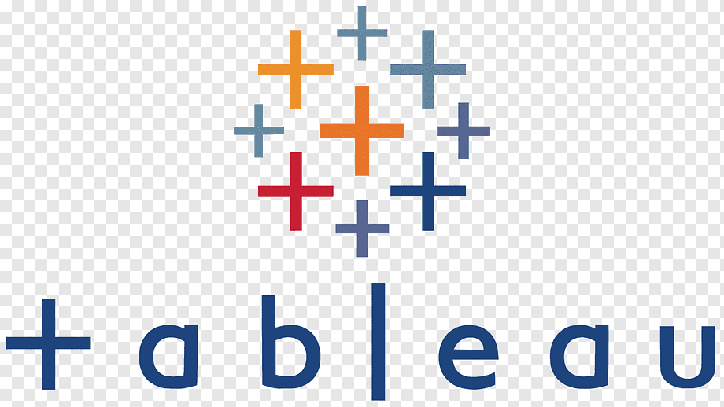
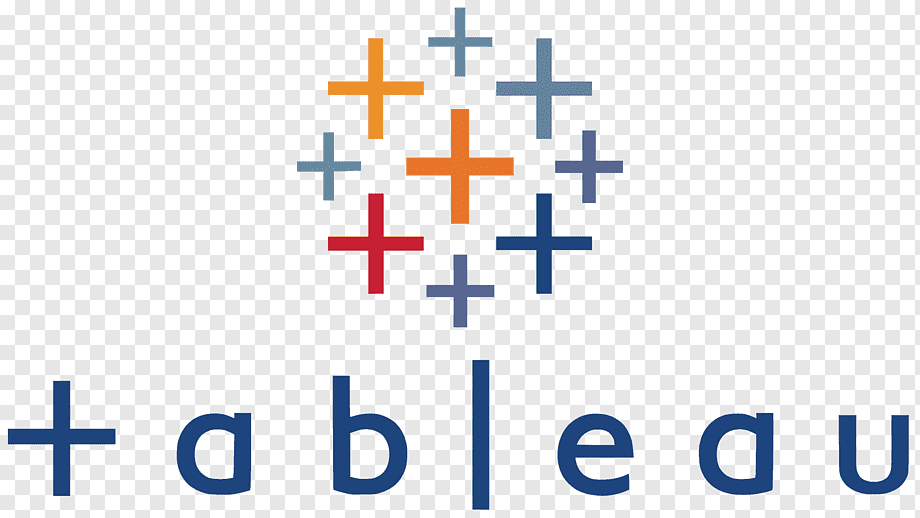
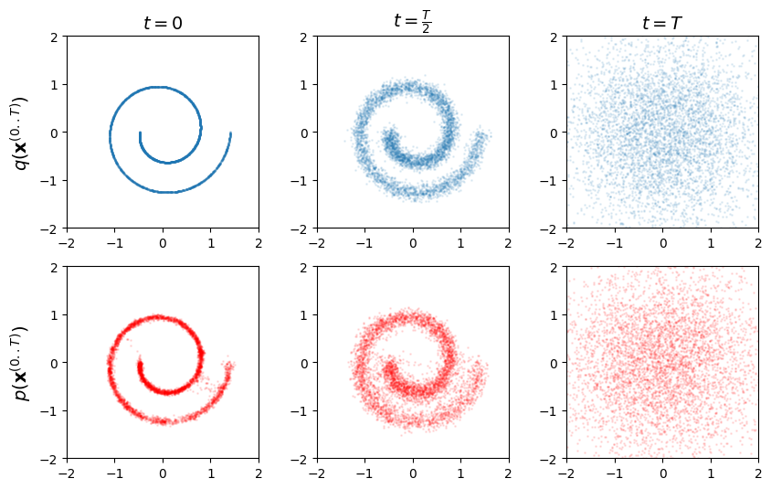

Diffusion Models from Scratch
Diffusion Models from Scratch
Gen AI Coding Group(Vancouver)
Worked on diffusion models inspired by thermodynamic equilibrium principles and denoising probabilistic diffusion models (DDPMs). Explored their applications for generating high-quality images by leveraging pytorch